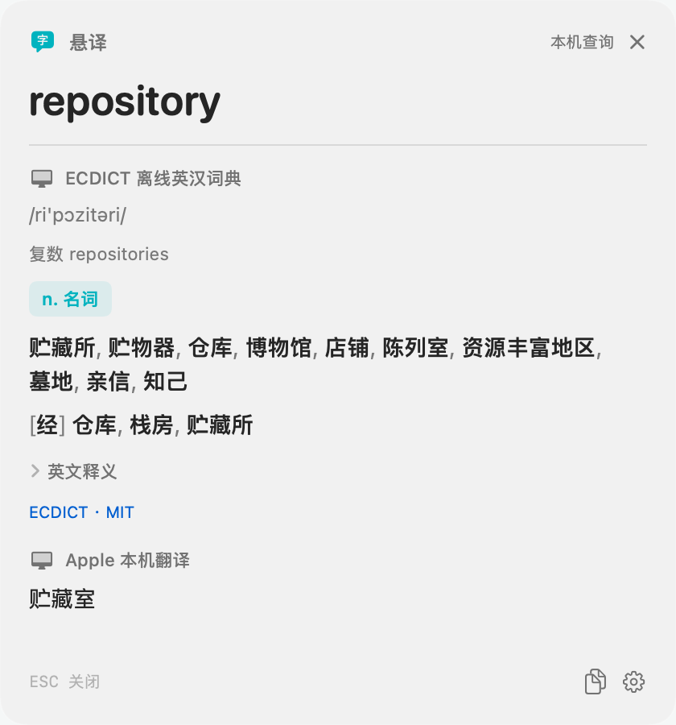

指向
把鼠标放在想查的单词上。优先直接读取文字；无法读取时，尝试识别鼠标附近的画面。
为你的阅读，留一点轻盈。
论文、网页，或是图片里的一句话。
把鼠标放在单词上，轻按 Option。
释义与翻译，就在你阅读的地方。
Developer ID 签名 · 已通过 Apple 公证
A mind sees more than answers. Every book becomes a of ideas, and every encounter leaves room for .
eager to know or learn something
指向 → 轻按 ⌥ Option → 看释义
交互示意 · 点击文中的高亮单词试试网页中的释义为交互示意；实际取词在 Mac 应用中完成。
01 / 阅读时，少一步
不用复制，也不用切走当前窗口。把注意力留给你正在读的内容。
把鼠标放在想查的单词上。优先直接读取文字；无法读取时，尝试识别鼠标附近的画面。
轻按并松开 Option。也可以设置自己的快捷键，或启用自动悬停。
在浮窗里看释义、翻译和发音。按 Esc 或点击浮窗外，继续阅读。
02 / 轻巧，也有自己的章法
选择适合你的词典、翻译和识别来源。
ECDICT 离线英汉词典与 macOS 系统词典，提供随手可查的释义。默认先看词典，需要时再展开翻译。
ECDICT 首次下载约 52 MB，之后可离线查询。macOS 26+ 可使用 Apple 本机翻译。也可填写自己的地址、模型和 API Key，连接 OpenAI 兼容服务，逐步显示回复。
Apple 翻译需先下载支持的语言包；云服务费用由服务商决定。直接取词失败时，由 Apple Vision 在本机识别。图片、PDF、暂停的视频画面，都可以尝试；也支持可选的百度 OCR。
识别效果取决于画面清晰度；受保护内容可能无法截图。点击单词旁的喇叭，用 Apple 本机语音朗读。英语可选美式或英式口音，语速在 0.5–1.5× 之间调整。
已安装的匹配声音可离线使用，无需 API Key。03 / 由你选择，在哪里处理
没有 HoverLens 账户，也不提供查询历史或生词本。服务如何处理你的内容，取决于你选择的来源。
Apple Vision OCR 不上传截图。离线词典、系统词典，以及已准备好语言包的 Apple 翻译在本机运行。首次下载词典、语言包或声音需要联网。
百度 OCR 会接收鼠标附近的截图；云端翻译会接收查询单词。显式开启上下文后，最多附带 600 个字符。请按服务商的隐私政策使用。

04 / 从下载，到第一次查词
打开 DMG，把 HoverLens.app 拖到 Applications 文件夹，再从那里启动。当前提供 Apple Silicon 安装包。
按应用指引开启辅助功能与屏幕录制权限；系统要求时退出并重新打开应用。公证不会自动授予这些权限。
下载 ECDICT 离线词典，或启用系统词典。macOS 26+ 可准备 Apple 翻译语言包；云端来源需填写自己的凭证。
应用设置中有取词测试页。试着查一个词，再调整快捷键、发音或自动悬停，让它适合你的习惯。
FAQ
当前 v0.4.4 安装包支持 Apple Silicon（M 系列芯片），需要 macOS 14 或更新版本，暂未提供 Intel 安装包。Apple 本机翻译另需 macOS 26+；较早系统仍可使用离线词典、系统词典及兼容的云端翻译服务。
HoverLens 可免费下载。本机 OCR、系统词典、ECDICT 和本机发音无需 API Key；Apple 本机翻译需支持的系统与语言包。选择云端翻译或百度 OCR 时，需要自己的凭证，额度和费用由对应服务商决定。
这个下载包使用 Developer ID 签名，应用和 DMG 均已通过 Apple 公证并装订票据，Gatekeeper 检查已通过。下载安装后仍需按系统提示打开应用，并授予取词所需权限。公证是 Apple 的自动化安全检查，不是 App Store 审核。
HoverLens 专注于鼠标附近的单词查询。OCR 可尝试识别图片或暂停视频中的文字，但不提供整篇文章翻译或实时字幕翻译。识别结果取决于字体、清晰度和应用是否允许截图。
凭证保存在你 Mac 上权限受限的本地文件中，目前未加密，也未使用钥匙串。无需向 HoverLens 开发者注册账户；请妥善管理你自己的服务密钥。
新版本将发布在 GitHub Releases。目前可手动下载替换应用；遇到问题可邮件联系开发者，请附上应用版本和 macOS 版本。
让好奇心，留在当下。
已签名并经 Apple 公证 · Apple Silicon · macOS 14+
a7a0300f57e3a1e9caa0908311635b55304e39fdc8ca16e1593d20db1ea4cecd